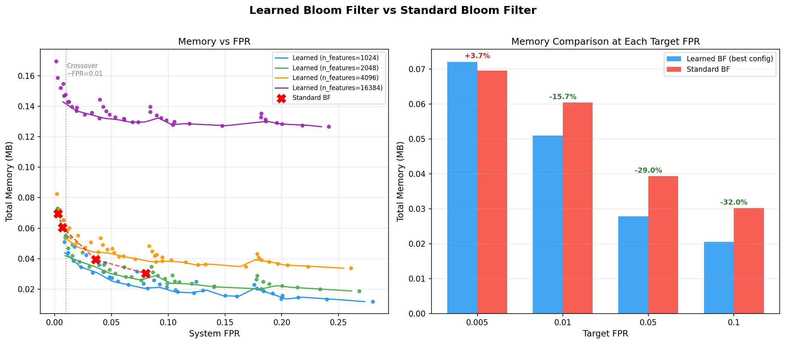
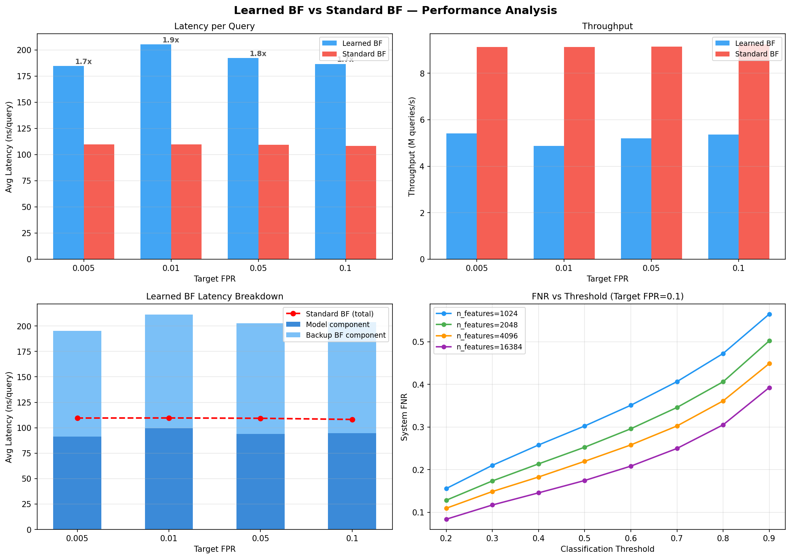

Replacing hash-based membership checks with a machine learning oracle backed by a constrained Bloom filter — benchmarked across 160 configurations on 420K URLs.
Baseline — all bad training URLs inserted directly.
Model handles bulk classification; BF patches training errors only.
Built from scratch, exposed to Python via pybind11.
Stateless vectorizer — no vocabulary storage.


Learned BF achieves 16–32% memory reduction at FPR ≥ 0.01. At FPR = 0.005, learned BF (0.072 MB) exceeds standard BF (0.070 MB) by 3.6% — feature space inflation at n_features = 4096 erases gains. The crossover is driven by model weight cost (n_features × 64 bits) dominating as larger feature spaces are needed for tighter precision.
Consistent 1.69–1.87× latency overhead across all FPR targets (~185–205 ns vs ~109 ns). The overhead is stable because model inference and BF lookup costs are largely independent of the FPR target — it is structural, not tunable.
Model (~91–99 ns, ~49%) and backup BF (~104–112 ns, ~54%) contribute roughly equally to total latency. Neither dominates — optimizing either component alone recovers at most half the overhead. Standard BF cost sits at approximately the model-only level.
Standard BF sustains ~9.1–9.2M queries/s vs learned BF's ~4.9–5.4M queries/s. The ~1.7× throughput gap directly mirrors the latency overhead — the sequential model + BF pipeline approximately halves effective throughput relative to a single BF lookup.
FNR drops 38–44% as n_features scales from 1024 to 16384 at any fixed threshold. More hashing buckets reduce collisions, improving oracle generalization. However, this gain comes at a linear model memory cost — creating a direct FNR–memory tradeoff independent of the BF component.
System FNR reflects model generalization error, not a BF failure. The backup BF guarantees zero false negatives on its own inserted elements by construction — it cannot catch bad URLs the model misses at test time, as BFs memorize rather than generalize. FNR is entirely the oracle's responsibility.